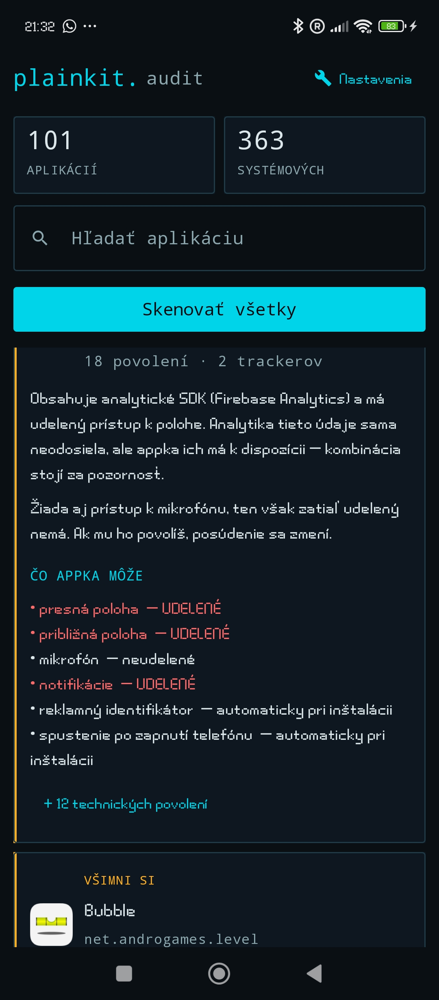
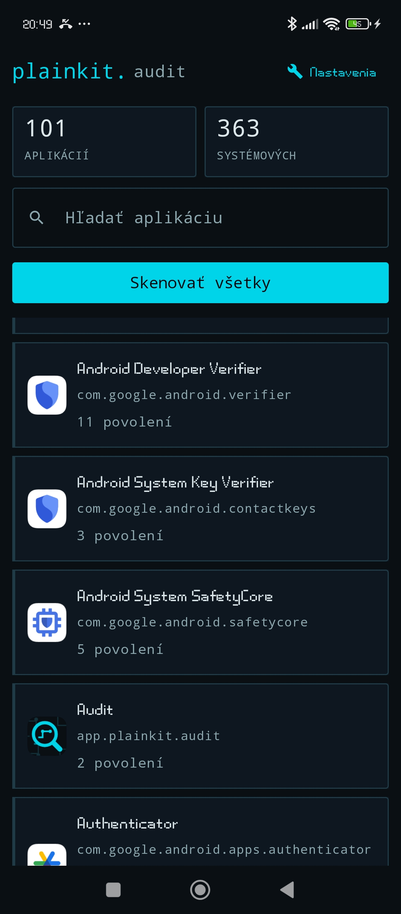
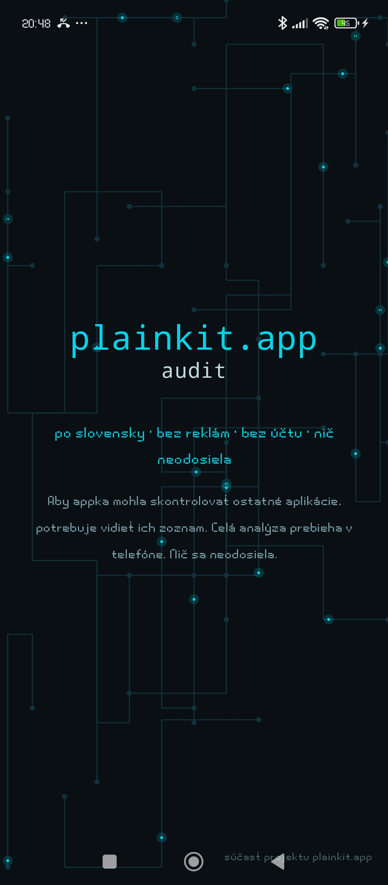

Čo vaše aplikácie skutočne môžu
What your apps can actually do
Málokto zistí, že baterka má povolený mikrofón alebo že hra
spred roka stále vidí kontakty. Audit vypíše každú nainštalovanú aplikáciu
a normálnou vetou povie, kam dočiahne a čo v sebe nesie.
Most people never find out that a flashlight app has been
granted the microphone, or that a game they installed last year still sees their
contacts. Audit lists every installed app and tells you, in a normal sentence,
what it can reach and what it carries inside.



Hľadám testerov. Google vyžaduje, aby
appku pred zverejnením v obchode malo 12 ľudí nainštalovanú 14 dní. Ak máte
Android a chcete pomôcť: pridajte sa do skupiny nižšie, potom sa prihláste
do testu a nainštalujte appku z Play. Nechajte ju v telefóne dva týždne —
viac netreba. Ak ju aj otvoríte a niečo vám nebude jasné, napíšte mi, to je
pre mňa najcennejšie.
Looking for testers. Google requires
12 people to keep the app installed for 14 days before it can be published.
If you have an Android device and want to help: join the group below, then
opt in and install from Play. Leaving it on the device for two weeks is all
that is needed. If you do open it and something is unclear, tell me — that
part is worth the most to me.
1. plainkit-audit-testers
2. play.google.com/apps/testing/app.plainkit.audit
Stiahnuť pre Android
Download for Android
v1.0 · 7,85 MB · Android 8.0+ · GPLv3
Inštalácia. Stiahnutý súbor otvorte
v telefóne. Android sa spýta, či povoliť inštaláciu z tohto zdroja — aplikácia
nie je z Google Play. Samotný súbor je uložený na GitHube; sťahovanie sa spustí
až po kliknutí, stránka sa naň sama nepripája.
Installing. Open the downloaded file on
your phone. Android will ask whether to allow installation from this source —
the app is not distributed through Google Play. The file itself is hosted on
GitHub; the download starts only when you click, this page never connects to it
on its own.
Upozornenie na novú verziu. Aplikácia
sama nikam nechodí, takže o novom vydaní sa nedozvie. Ak chcete byť
upozornený, použite Obtainium —
vložte doň odkaz na zdrojový kód a dá vám vedieť, keď vyjde nová verzia.
Getting notified about new versions. The
app never contacts a server on its own, so it cannot tell you when a new
release exists. If you want to be notified, use
Obtainium — add the
source-code link to it and it will let you know when a new version is out.
Overenie súboru. Ak chcete mať istotu, že
máte presne ten súbor, ktorý sme vydali, porovnajte jeho odtlačok SHA-256:
Verifying the file. If you want to be sure
you have exactly the file we published, compare its SHA-256 fingerprint:
9317A99716881D78B40998959E47A6055F11D6A5A50CFA731C072B7A56B750E6
Vo Windows: Get-FileHash .\app-release.apk -Algorithm SHA256.
Ak sa odtlačok nezhoduje, súbor nie je náš — neinštalujte ho.
On Windows: Get-FileHash .\app-release.apk -Algorithm SHA256.
If the fingerprint does not match, the file is not ours — do not install it.
Čo aplikácia vie
What it does
- Vypíše povolenia zrozumiteľne — „presná poloha“ namiesto
ACCESS_FINE_LOCATION.
- Rozlišuje udelené / neudelené / automaticky pri
inštalácii — väčšina aplikácií dostane kopu povolení bez toho, aby sa
vás niekto pýtal.
- Hľadá v inštalačných súboroch ~115 známych sledovacích
knižníc a rozlišuje ich účel: reklama, atribúcia, analytika, detekcia podvodov,
hlásenie pádov.
- Nález vysvetlí jednou vetou a zoradí aplikácie podľa
závažnosti.
- Pamätá si výsledky a po aktualizácii aplikácie ukáže, čo sa
zmenilo.
- Slovensky aj anglicky.
- Shows permissions in plain language — “precise location”
instead of
ACCESS_FINE_LOCATION.
- Distinguishes granted / not granted / automatic at
install — most apps get a pile of permissions without ever asking you.
- Scans installation files for ~115 known tracking libraries and
separates their purpose: ads, attribution, analytics, fraud detection, crash
reporting.
- Explains each finding in one sentence and sorts apps by
severity.
- Remembers results and reports what changed after an app
update.
- Slovak and English.
Čo aplikácia nerobí
What it does not do
- Nehovorí, čo sa práve deje — hovorí, čo je v kóde
prítomné. Analytická knižnica v aplikácii neznamená, že v tejto chvíli
niečo odosiela.
- Zoznam signatúr nie je úplný, takže skôr podhodnocuje,
než preháňa.
- Nie je to obvinenie ani odborný posudok — je to informácia,
ktorá vám má pomôcť rozhodnúť sa.
- It does not tell you what is happening right now — it reports
what is present in the code. A bundled analytics library does not
mean data is being sent at this moment.
- The signature list is not complete, so it
under-reports rather than exaggerates.
- It is not an accusation nor an expert assessment — it is
information to help you decide.
Zdrojový kód (GPLv3)
Source code (GPLv3)
Zásady ochrany súkromia ↓
Privacy policy ↓
Zásady ochrany súkromia
Android aplikácia „plainkit. audit“ · posledná aktualizácia 16. 8. 2026
Aplikácia nezbiera, neukladá ani neodosiela žiadne osobné údaje.
Celá analýza prebieha vo vašom telefóne. Výsledky nikdy neopustia zariadenie.
Čo aplikácia robí
Audit prečíta zoznam aplikácií nainštalovaných vo vašom telefóne, pozrie sa
do ich inštalačných súborov (APK) a hľadá v nich známe sledovacie knižnice —
reklamné, marketingové, analytické, nástroje na detekciu podvodov a na hlásenie
pádov. Výsledok spojí s povoleniami, ktoré daná aplikácia žiada a ktoré má
skutočne udelené, a zobrazí vám ho v zrozumiteľnej vete.
Všetky tieto operácie prebiehajú lokálne, vo vašom zariadení.
Nič sa pri nich neodosiela na žiadny server.
Prečo aplikácia potrebuje vidieť ostatné aplikácie
Aby mohla robiť to, na čo je určená, potrebuje systémové oprávnenie
QUERY_ALL_PACKAGES, ktoré jej umožňuje získať zoznam nainštalovaných
aplikácií. Bez neho by videla len samu seba.
Tento zoznam sa používa výhradne na zobrazenie a analýzu priamo v aplikácii.
Nikam sa neodosiela, nikde sa nezálohuje a s nikým sa nezdieľa.
Kde sú uložené výsledky
Výsledky skenov a história zmien sa ukladajú do lokálnej databázy v súkromnom
úložisku aplikácie vo vašom zariadení. Prístup k nim nemá žiadna iná aplikácia
ani my.
- V Nastaveniach aplikácie môžete kedykoľvek vymazať log zmien alebo všetky
výsledky skenov.
- Odinštalovaním aplikácie sa všetky jej údaje nenávratne odstránia.
Sieťové spojenia
Aplikácia funguje aj úplne bez internetu. Existuje však jedno spojenie,
ktoré môže nadviazať, a preto ho tu uvádzame otvorene:
Aktualizácia zoznamu signatúr. Rozpoznávanie sledovacích
knižníc stojí na zozname signatúr, ktorý je zabudovaný priamo v aplikácii.
Aby nezastarával, aplikácia si môže z plainkit.app stiahnuť jeho
novšiu verziu.
Toto spojenie je jednosmerné: aplikácia iba sťahuje
verejný súbor so zoznamom. Neodosiela pritom nič — ani zoznam
vašich aplikácií, ani výsledky, ani žiadny identifikátor zariadenia či
používateľa.
Ako pri každom bežnom sťahovaní zo siete platí, že hostiteľ webu
Cloudflare (u ktorého je plainkit.app prevádzkovaný) pri takom
spojení vidí IP adresu vášho pripojenia a technické údaje
požiadavky, a to na úrovni infraštruktúry. Nedokážeme tomu zabrániť a nechceme
to zamlčať. Z IP adresy sa nedá zistiť, aké aplikácie máte v telefóne — tá
informácia sa neodosiela vôbec.
To isté platí pre stiahnutie inštalačného súboru tlačidlom
vyššie: súbor je uložený na GitHube, ktorý pri sťahovaní vidí
IP adresu vášho pripojenia. Spojenie vznikne až vtedy, keď na tlačidlo kliknete —
táto stránka sa naň sama nepripája.
Čo aplikácia nerobí
- Neobsahuje žiadne reklamy.
- Nevyžaduje registráciu ani účet.
- Neobsahuje analytiku, meranie používania ani hlásenie pádov —
samotný Audit neobsahuje žiadnu sledovaciu knižnicu, čo si
môžete overiť ktorýmkoľvek nástrojom tohto typu vrátane jeho samého.
- Nepoužíva reklamné identifikátory.
- Nepredáva ani nezdieľa žiadne údaje s tretími stranami, pretože žiadne
nezískava.
Presnosť a hranice
Kvôli poctivosti uvádzame aj to, čo aplikácia nevie:
- Hovorí, čo je v kóde aplikácie prítomné, nie čo sa práve
deje. Prítomnosť analytickej knižnice neznamená, že sa v danej chvíli
odosielajú údaje.
- Zoznam signatúr nie je úplný, takže výsledky skôr
podhodnocujú, než preháňajú.
- Výsledok je informácia, ktorá vám má pomôcť rozhodnúť sa. Nie je to
obvinenie ani odborný posudok.
Deti a citlivé údaje
Aplikácia nie je zameraná na deti a vedome od nikoho nezískava žiadne osobné
ani citlivé údaje.
Zmeny týchto zásad
Ak sa fungovanie aplikácie zmení tak, že to ovplyvní tento dokument,
aktualizujeme ho a zmeníme dátum uvedený hore. Podstatné zmeny sa objavia aj
v popise novej verzie aplikácie.
Kontakt
Otázky, pripomienky alebo nahlásenie chyby: admin
Audit je súčasťou projektu plainkit.app.
Privacy Policy
Android app “plainkit. audit” · last updated 16 August 2026
The app does not collect, store or transmit any personal
data. The entire analysis runs on your phone. Results never leave your
device.
What the app does
Audit reads the list of applications installed on your phone, looks inside
their installation files (APKs) and searches for known tracking libraries —
advertising, marketing, analytics, fraud detection and crash reporting. It then
combines this with the permissions each app requests and has actually been
granted, and presents the result as a plain-language sentence.
All of this happens locally, on your device. Nothing is sent
to any server in the process.
Why the app needs to see your other apps
To do what it is built for, the app needs the QUERY_ALL_PACKAGES
system permission, which allows it to obtain the list of installed applications.
Without it, it would only be able to see itself.
This list is used solely for display and analysis inside the app.
It is never uploaded, backed up or shared with anyone.
Where results are stored
Scan results and the change history are stored in a local database inside the
app's private storage on your device. No other application — and not us — has
access to them.
- In the app's Settings you can clear the change log or all scan results at
any time.
- Uninstalling the app permanently removes all of its data.
Network connections
The app works fully offline. There is, however, one connection it may make,
which we state here openly:
Updating the signature list. Detection of tracking
libraries relies on a signature list bundled inside the app. To keep it from
going stale, the app may download a newer version of that list from
plainkit.app.
This connection is one-way: the app only downloads
a public list file. It sends nothing — not the list of your
apps, not the results, and no device or user identifier.
As with any ordinary download, the web host Cloudflare
(which serves plainkit.app) can see the IP address of your
connection and technical request data at the infrastructure level. We cannot
prevent this and we will not hide it. An IP address does not reveal which apps
you have installed — that information is never transmitted at all.
The same applies to downloading the installation file with
the button above: the file is hosted on GitHub, which sees the
IP address of your connection when you download it. That connection is made only
when you click — this page never contacts it on its own.
What the app does not do
- It contains no advertising.
- It requires no registration or account.
- It contains no analytics, usage measurement or crash reporting —
Audit itself contains no tracking library whatsoever, which
you can verify with any tool of this kind, including Audit itself.
- It does not use advertising identifiers.
- It does not sell or share any data with third parties, because it obtains
none.
Accuracy and limits
In the interest of honesty, here is what the app cannot tell you:
- It reports what is present in an app's code, not what is
happening right now. The presence of an analytics library does not mean data is
being sent at this moment.
- The signature list is not complete, so results tend to
under-report rather than exaggerate.
- The result is information to help you decide. It is not an accusation nor
an expert assessment.
Children and sensitive data
The app is not directed at children and does not knowingly obtain any personal
or sensitive data from anyone.
Changes to this policy
If the app changes in a way that affects this document, we will update it and
change the date shown above. Significant changes will also be noted in the
release notes of the new app version.
Contact
Questions, feedback or bug reports: admin
Audit is part of the plainkit.app project.